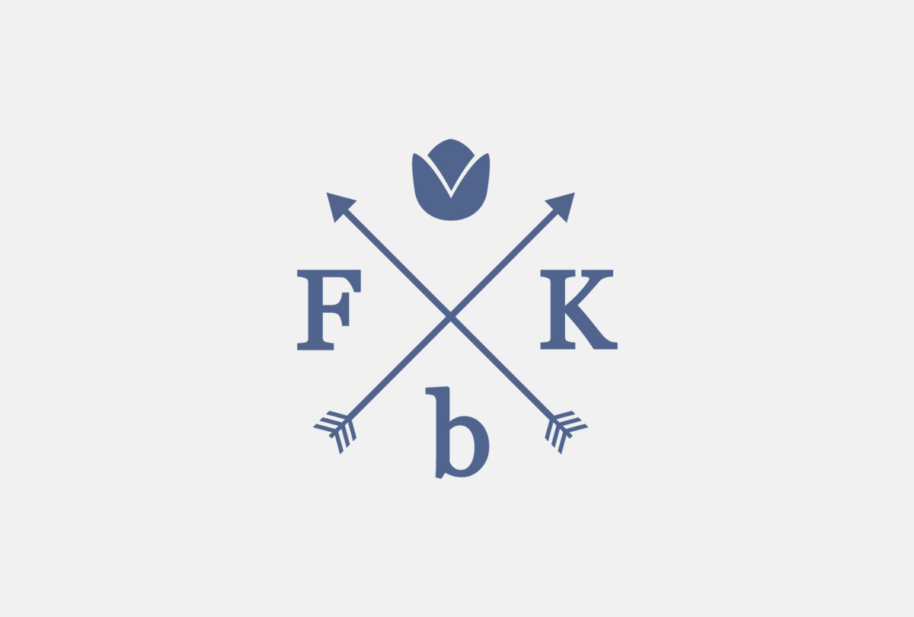
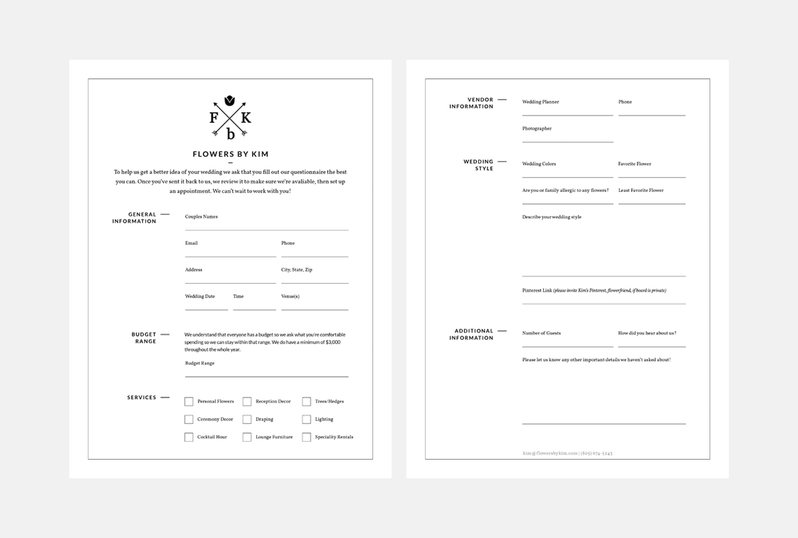
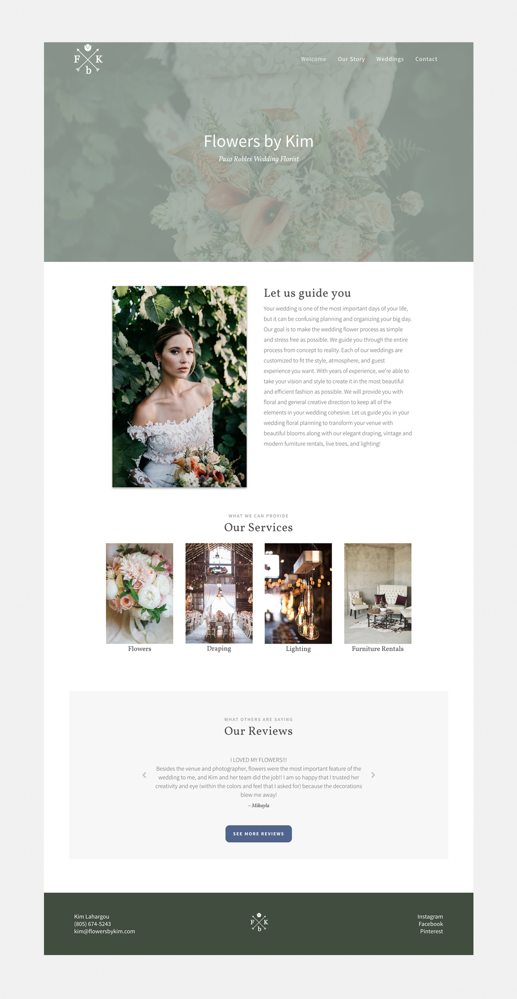

Flowers by Kim is a wedding and event florist in Paso Robles, California. They provide a variety of services including floral design, furniture rentals, live trees, lighting, and draping to events and weddings. Because Flowers by Kim offers a number of different of services it was important to keep a soft elegant look while still feeling like a blank canvas that anyone could picture their event.
One of the key components of designing the logo and brand was that it would remain timeless while also being elegant yet neutral. The logo needed to be simple so it could be placed on anything from uniforms to photobooks. It was also important that it would look good with any color since they often use different color schemes, especially during a bridal show that always changes.
 Planning a wedding or event can be challenging so the number one goal of the site was to keep it simple so users could easily find what they were looking for. Mainly being a florist, the idea was to have the photos be the first thing a user looks at while still having enough copy to guide them through the process. Another key element was showing the user all of the potential services that Flowers by Kim offers.
See the site → Flowers by Kim
